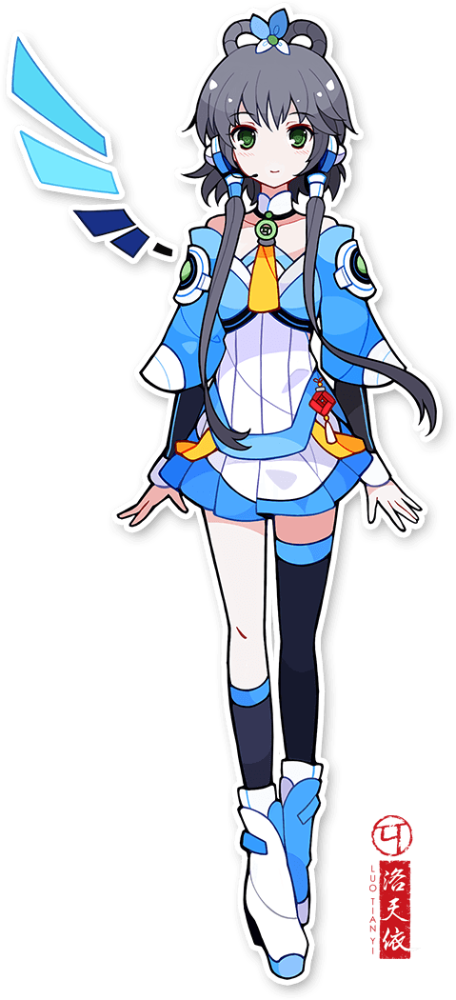

“华风夏韵，洛水天依。”
一个感性、温柔、细致的少女。既有为别人流泪的温柔，也有历经挫折绝不放弃的坚强。她擅长用歌声表现自己和他人的感情，并决心成为传递幸福与感动的歌手。

#66CCFF洛天依是一个情感丰富、有点内向的少女。她能够敏锐地感受到他人的感情，对曾经在人类世界创造了历史的 VOCALOID 前辈们非常憧憬，也梦想着自己有朝一日能够成为用歌声为别人传递感动与幸福的歌姬。
灰发绿瞳，环形辫，颈间配碧玉，腰间系中国结。她的名字取自“华风夏韵，洛水天依”，承载着中国传统文化中人们对于美好和幸福的憧憬。2012 年 7 月 12 日，首个 VOCALOID 中文声库正式发布，洛天依由此来到人类世界。
因为初到人类世界时完全不懂人类的语言，她平常不能与人对话，只能通过歌唱来表达自己的感情和心中的旋律。这也让她的每一次发声，都成为了一种更纯粹的传递。
第一首 VOCALOID 中文神话曲，在 B 站播放量超过千万，标志着中文虚拟歌手创作生态的爆发。
火遍全网的“烫嘴”神曲，以极快的语速和叙事性成为洛天依最具辨识度的舞台作品之一。
以三国为背景的国风燃曲，展现了洛天依在宏大叙事与强烈节奏中的声音表现力。
悠远清冷的国风旋律，是洛天依早期极具代表性的抒情作品之一。
以《西游记》为灵感的高燃国风作品，节奏紧凑、气势磅礴，是圈内传唱度极高的经典。
把中华美食写进歌词的轻松小品，是洛天依早期最深入人心的作品之一。
以猫的视角写成的小品，旋律轻快、歌词俏皮，是洛天依作品中少见的治愈系萌曲。
洛天依早期最具代表性的抒情曲之一，旋律细腻，情绪层层递进。
2016 年登上湖南卫视小年夜春晚，是洛天依走向大众视野的重要舞台。
首个 VOCALOID 中文声库正式发布，洛天依由此诞生。
V4 中文声库与日文声库相继发售，形象由 TID 重新绘制，拓展了跨语种演唱的可能。
引入 AI 歌声合成技术，进一步释放声音的表现力与自然度。
V5 声库正式发售，提供 Original / Normal / Power / Nature 等多种音色。
新一代 AI 声库公测，持续探索虚拟歌手声音的边界。
与杨钰莹合作《花儿纳吉》，首次登上主流卫视春晚舞台。
以全息形式举办个人万人演唱会，虚拟歌手的线下演出进入新阶段。
在上海静安体育中心举办，是洛天依首场线下单人全息演唱会。
洛天依的首次 SOLO 巡回演出，覆盖北京、上海、成都、无锡等多座城市。
天依蓝从来不止是一种配色。她的造型被形容为“平衡了透亮感与未来感——既令人联想到水与天空的倒影，也带有数码屏幕的辉光”，传递出一种轻松、情感上易于亲近的温暖，而非冰冷的科技感。
在演唱会上，数万人同时将荧光棒转为蓝色，汇成一片“蓝色光海”。这抹蓝色反复出现在她的服装、主视觉、舞台灯光与粉丝应援中，逐渐成为洛天依与听众之间无需言说的默契。